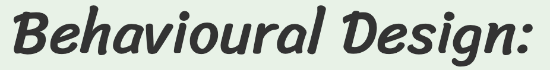
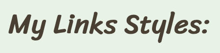
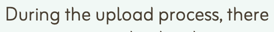
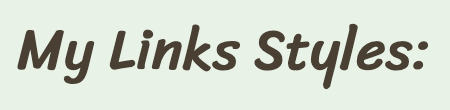
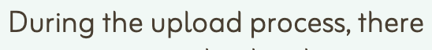
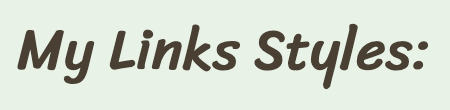
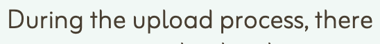
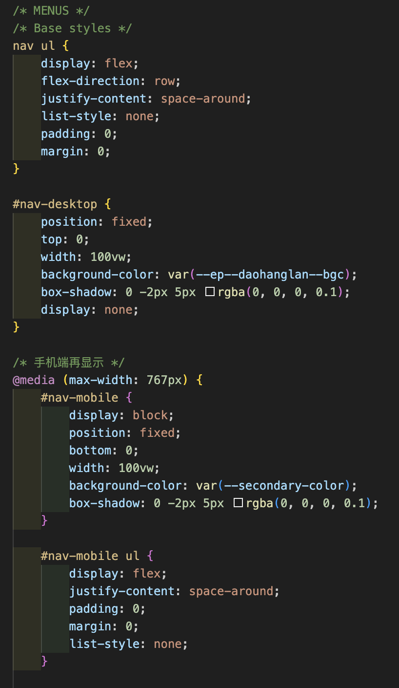
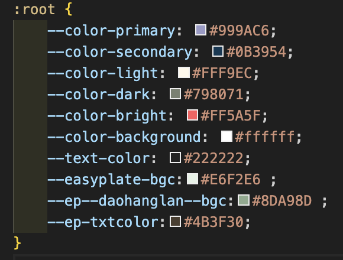

My Button Styles:
Behavioural Design:
The focus of this section of the Style Guide is ensuring user needs for usability and function are supported.
My webpage is mainly composed of the following parts:
Links
Buttons
Cards/Filp-Cards
Texts
Images
Menu
Style 1:
Style 2:
Style 3:
My Card/Filp-Card Styles:
This is my card.
My Text Styles:

 





My Image Styles:

Menu:

Other Styles:

Log in/Sign up
| Values | Design Implication | Specific Element |
|---|---|---|
| Empowerment |
Check the recipe at any time Annotation: This text emphasizes instant access to recipes, supporting user convenience and usability. Place it near a mobile-friendly feature (e.g., search bar or favorites) to reflect the “any time” aspect. Ensure legibility and visibility, possibly using a clock or bookmark icon to reinforce the idea. |
Annotation: When users open the webpage, they will be greeted with a personalized welcome message to enhance user engagement and create a friendly atmosphere. Annotation: The system will record the number of consecutive check-in days, allowing users to track their consistency and encouraging daily use. |
| Well-being |
Annotation: This value highlights health and variety in eating habits. Use vibrant imagery of diverse meals or a colorful food pyramid. Consider placing it near meal recommendations or nutrient info to reinforce the message. Annotation: Focus on environmental responsibility. Use green tones, recycling icons, or minimalistic visuals. Position this near features like “leftover recipes” or “smart shopping lists” to directly tie the value to user actions. |
Annotation: The webpage will include a notebook feature where users can log their meals daily, helping them stay mindful of their dietary habits. |
| Inspiration |
Annotation: Emphasizes enjoyment and lifestyle enhancement. Use imagery of happy moments around food—like people smiling while eating or beautifully presented dishes. This can be tied to personalized recommendations or a “Today's Featured Dish” section. Annotation: Highlights community and self-expression. Include user-generated content (like photo uploads or reviews), badges for completed recipes, or a “Share Your Dish” button. Use warm tones and expressive visuals to evoke pride and joy. |
Generate a weekly report every week to report changes in diet
People can make their own recipes and record videos, and then submit them to the community for everyone to rate Annotation: This feature encourages user-generated content by allowing people to contribute their own recipes and cooking videos, promoting engagement and creativity. Submitting to the community and enabling ratings introduces a social interaction layer, fostering a sense of recognition and participation. |
| Belonging |
Annotation: Focus on belonging and social connection. Include community features like forums, comment sections, or recipe swap spaces. Use interface elements such as profile pictures, likes, and replies to foster interaction and a sense of togetherness. Annotation: Emphasizes empathy and personalization. Provide tips based on user preferences (e.g., dietary restrictions), onboarding guidance, and friendly tone in microcopy. Consider adding a chatbot or FAQ to offer help quickly and make users feel heard. |
Community & Adding friends Annotation: Setting up or joining a community (e.g., themed cooking groups). Adding friends to share recipes, progress, or meal plans — promoting a sense of belonging and motivation through social interaction. |